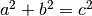
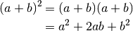
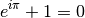

Конструкции разметки Sphinx¶
Sphinx содержит дополнительные конструкции разметки, значительно расширяющие функционал, но которые не поддерживаются стандартной разметкой reStructuredText.
Автоматическое содержание¶
Стандартная разметка ReST поддерживает создание в отдельных документах автоматического содержания на основе заголовков. Sphinx расширяет данную функцию и позволяет автоматически создавать общее оглавление для группы документов.
Файл index.rst обычно содержит автоматическое оглавление, созданное командой .. toctree:::
.. toctree::
:maxdepth: 2
:numbered:
:hidden:
имя_документа1
имя_документа1
имя_документа1
Команда .. toctree:: имеет несколько параметров:
:maxdepth:— уровни заголовков, включаемых в оглавление;:numbered:— нумерация всех пунктов оглавления;:hidden:— позволяет скрыть оглавление.
После параметров через пустую строку, с отступами, идут названия включаемых файлов, без расширения. Данные названия будут автоматически преобразованы в заголовки разделов.
Параметр :maxdepth: не распространяется на LaTeX-документы. Глубина оглавления в LaTeX контролируется его внутренним счетчиком, который можно настроить в файле конфигурации Sphinx conf.py, указав в преамбуле значение \setcounter{tocdepth}{2}.
Параметр :hidden: позволяет Sphinx’у быть в курсе структуры документа, но при этом не отображать оглавление. Удобно, если ссылки на разделы будут указаны, например, на боковой панели.
Подробнее об автоматическом оглавлении в Sphinx смотрите в разделе «The TOC tree» официальной документации Sphinx.
Примеры исходного кода с подсветкой синтаксиса¶
Sphinx поддерживает вставку примеров исходного когда с подсветкой синтаксиса на разных языках программирования. Вставка листингов осуществляется командой .. code-block:: <название яыка>:
.. code-block:: python
:emphasize-lines: 1-3,5
def some_function():
interesting = False
print 'This line is highlighted.'
print 'This one is not...'
print '...but this one is.'
Результат:
def some_function():
interesting = False
print 'This line is highlighted.'
print 'This one is not...'
print '...but this one is.'
Пример вставки листинга на языке Ruby:
.. code-block:: ruby
:linenos:
Some more Ruby code.
Результат:
1 | Some more Ruby code.
|
Команда .. code-block:: имеет следующие параметры:
:linenos:— добавляет нумерацию строк;:emphasize-lines:— включает подсветку отдельных строк, допускается перечисление одиночных строк через запятую или групп строк через тире.
Вставка примеров кода из файла¶
Также Sphinx поддерживает вставку кода непосредственно из файла скрипта:
.. literalinclude:: example.rb
:language: ruby
:emphasize-lines: 3,9-11
:encoding: latin-1
:start-after: 2
:end-before: 15
:linenos:
Параметры :start-after: и :end-before: позволяют указать с какой по какую строки приводить листинг.
Дополнительную информацию смотрите в разделе «Showing code examples» официальной документации Sphinx.
Вставка формул¶
Вставка формул в предложение:
Формула в предложении :math:`a^2 + b^2 = c^2`.
Формула в предложении .
Выравнивание формул относительно знака равно осуществляется с помощью знака &. Перенос строк с помощью \\:
.. math::
(a + b)^2 &= (a + b)(a + b) \\
&= a^2 + 2ab + b^2

Нумерация формул¶
Для нумерации формул необходимо использовать параметр :label::
.. math:: e^{i\pi} + 1 = 0
:label: euler
Формула :eq:`euler` представляет собой Тождество Эйлера.
(1)
Формула (1) представляет собой Тождество Эйлера.
Расположение номера относительно формулы зависит от настроек HTML-темы.
Подробнее смотрите главу Math support in Sphinx официальной документации Sphinx.
Отображение формул¶
Подробнее смотрите раздел Режим отображения формул. Также смотрите раздел Некорректно отображаются формулы на Read The Docs.
Вставка графиков¶
Для вставки графиков используются дополнительные расширения, список которых приведен на странице Sphinx Extensions официальной документации Sphinx.
Также смотрите раздел Подключение расширений.
Перекрестные ссылки¶
Sphinx позволяет создавать перекрестные ссылки между отдельными .rst файлами, подключенными в файле index.rst.
Ссылки на разделы¶
Для того, чтобы создать ссылку на другой раздел, необходимо сначала установить закладку перед этим разделом. Например, для ссылки на пункт Таблицы из раздела Стандартный синтаксис разметки reStructuredText я использовал следующие команды:
.. _rst-murkup-label:
Стандартный синтаксис разметки reStructuredText
===============================================
.. _table-label:
Таблицы
~~~~~~~
Таким образом, я установил закладки. Теперь можно сослаться на них:
Например, для ссылки на пункт :ref:`table-label` из
раздела :ref:`rst- murkup-label` я использовал следующие команды:
Ссылка осуществляется с помощью команды :ref: и названия закладки в обратных кавычках. Закладки автоматически преобразуются в названия разделов, поэтому между закладкой и заголовком ничего не должно находиться.
Аналогичным образом осуществляется ссылка на изображения и таблицы. Для формул используется немного иной синтакси.
Ссылки на изображения¶
Для ссылки на изображение перед ним также надо поставить закладку, которая автоматически будет преобразовываться в подпись изображения:
.. _my-favicon:
.. figure:: img/favicon.png
:scale: 300 %
:align: center
:alt: Альтернативный текст
Подпись изображения
Легенда изображения.
Теперь сделаем ссылку на изображение Подпись изображения:
Теперь сделаем ссылку на изображение :ref:`my-favicon`:
Ссылки на таблицы¶
Ссылки на таблицы осуществляются по тому же принципу. Сначала перед таблицей устанавливается закладка, которая потом автоматически преобразуется в название таблицы.
.. _cvs-table:
.. csv-table:: CSV-таблица
:header: "Treat", "Quantity", "Description"
:widths: 15, 10, 30
"Albatross", 2.99, "On a stick!"
"Crunchy Frog", 1.49, "If we took the bones out, it wouldn't be
crunchy, now would it?"
"Gannet Ripple", 1.99, "On a stick!"
Ссылка на CSV-таблица:
Ссылка на :ref:`cvs-table`:
Ссылки на формулы¶
Ссылка на формулы осуществляется немного иным способом, с помощью команды :eq:. Подробнее смотрите пункт Нумерация формул.
Дополнительные конструкции¶
Глоссарий¶
Sphinx позволяет создавать глоссарий с автоматической сортировкой. Элементы глоссария также автоматически попадают в алфавитный указатель.
.. glossary::
:sorted:
Трансценденция
Философский термин, характеризующий то, что
принципиально недоступно опытному познанию
или не основано на опыте.
Бозон
Частица с целым значением спина.
Результат:
- Бозон
- Частица с целым значением спина.
- Трансценденция
- Философский термин, характеризующий то, что принципиально недоступно опытному познанию или не основано на опыте.
За автоматическую сортировку отвечает параметр :sorted:.
Аббревиатуры¶
Аббревиатуры вставляются следующим образом, например, LIFO:
:abbr:`LIFO (last-in, first-out)`
Автозамены Sphinx (Подстановки)¶
Sphinx вводит ряд автозамен, которые не требуют объявления, их значения берутся из конфигурационного файла conf.py.
Номер релиза: |release|
Номер версии: |version|
Текущая дата: |today|
Номер релиза: 1.0
Номер версии: 1.0
Текущая дата: November 23, 2015
О настройке этих параметров смотрите в пунктах Версии публикации и Настройка отображения даты.
Смотрите также¶
.. seealso:: Блок с дополнительной информацией.
See also
Блок с дополнительной информацией. См. также Блоки примечаний и предупреждений.
Боковая врезка¶
Боковая врезка добавляетяс командой .. sidebar::
.. sidebar:: Боковая врезка
Оформление врезки зависит от используемой HTML-темы.
Рубрики¶
Рубрики создаютcя командой .. rubric:: и используются для создания заголовков, не включаемых в общее содержание.
.. rubric:: Пример рубрики
Текст рубрики
Пример рубрики
Текст рубрики
Горизонтальный список¶
.. hlist::
:columns: 3
* A list of
* short items
* that should be
* displayed
* horizontally
|
|
|
Note
Здесь приведен не полный перечень дополнительных конструкций Sphinx, подробнее в разделе Inline markup и Paragraph-level markup официальной документации Sphinx.
Документация по языкам программирования¶
Для создания документации по языкам программирования Sphinx имеет специальные команды. Например, для описания тех или иных функций языка может использоваться команда .. function:: :
.. function:: pyfunc()
Описание функции Python.
-
pyfunc()¶ Описание функции Python.
Эта команда автоматически добавляет функцию в Index.
Похожие конструкции имеются и для других языков программирования, подробнее смотрите раздел Sphinx Domains официальной документации Sphinx.
Указатель¶
Sphinx автоматически генерирует алфавитный указатель, на основе команд .. glossary::, .. function:: и некоторых других (подробнее смотрите раздел Sphinx Domains официальной документации Sphinx).
Но можно и вручную внести элементы в алфавитный указатель с помощью команды .. index::.
.. index:: Указатель
Главная запись индекса предваряется восклицательным знаком:
.. index:: ! Указатель
Короткая запись:
.. index:: BNF, grammar, syntax, notation
Ссылка на указатель имеет вид :ref:`genindex` (Index).